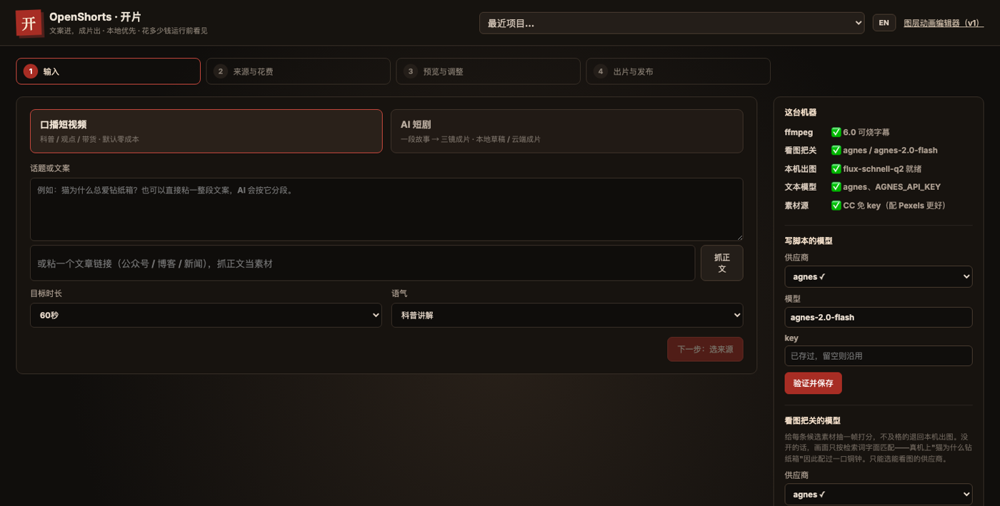
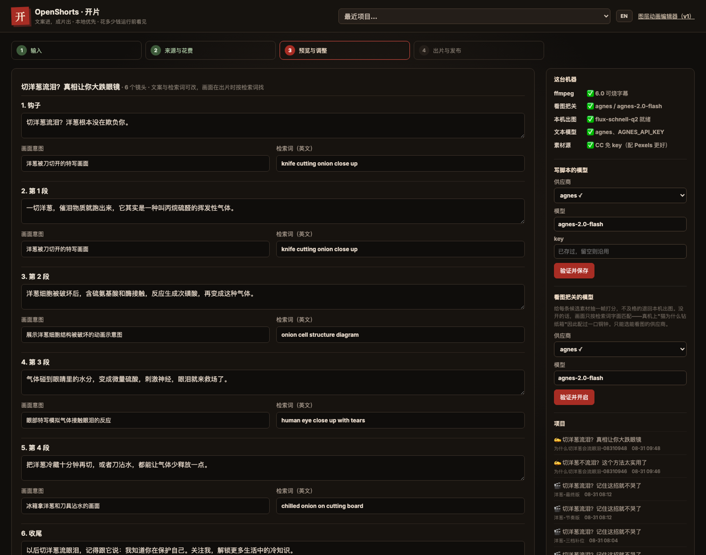
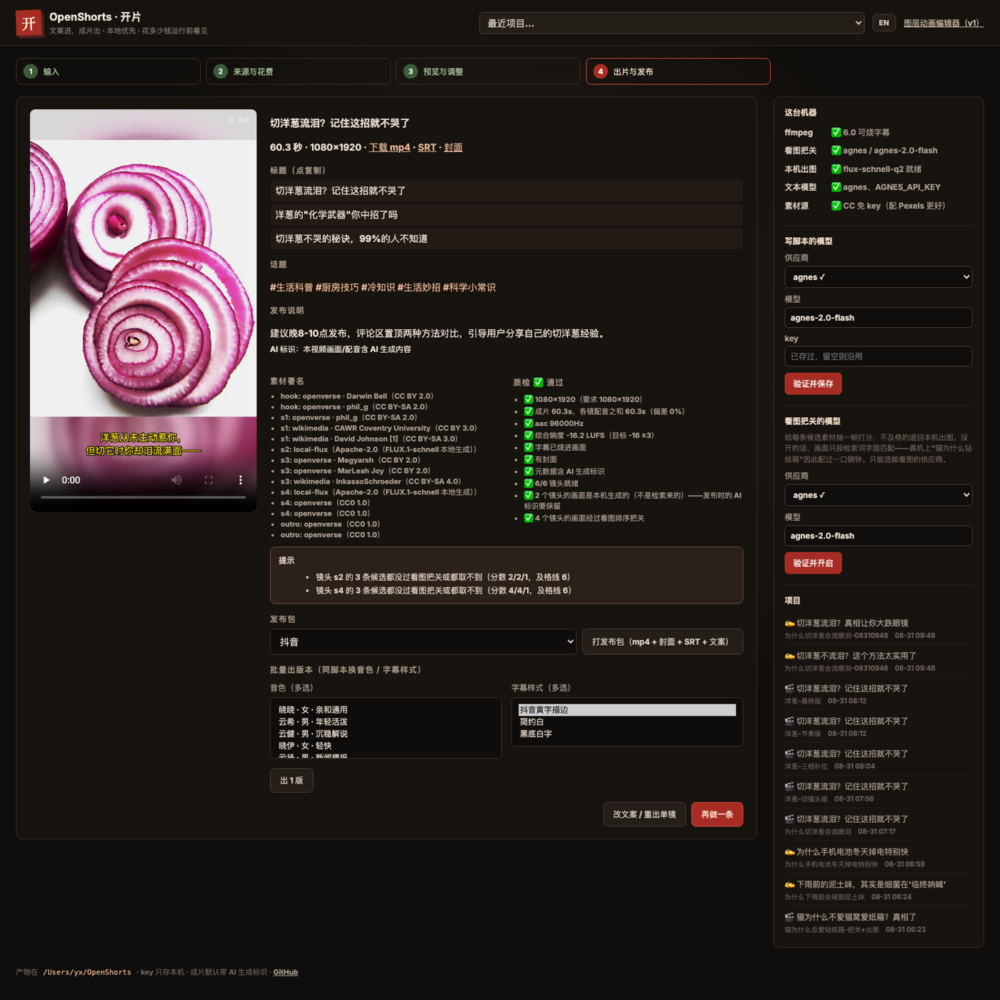
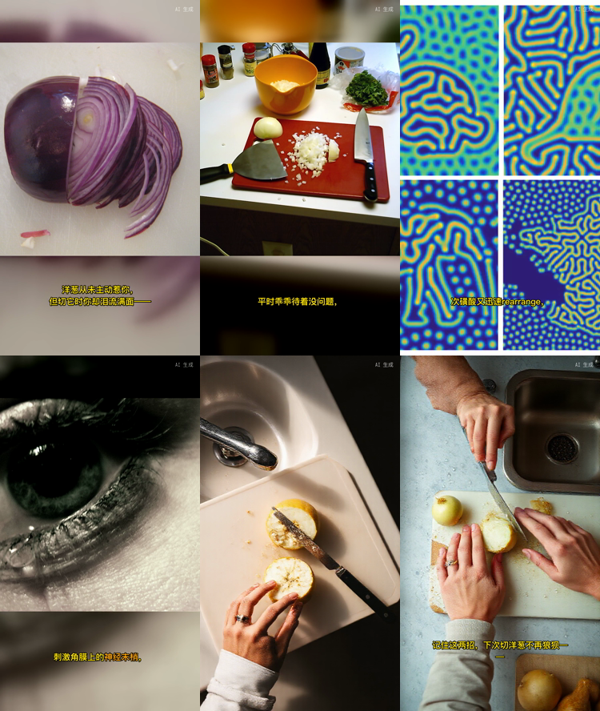

界面不出现"工作流 / 参数"这类词——每一步只回答一个问题。

话题、一段文案、或一个文章链接；选时长和语气。AI 写出分镜脚本。

口播文案、画面意图、检索词全部摊开可编辑——不满意就改，改了只重做该镜。

配音、找素材、烧字幕、合成、逐项质检；一键导出 mp4 + 封面 + SRT + 发布文案（含素材署名）。
同一个引擎（agency-orchestrator），两种打开方式。
写脚本 → Edge TTS 配音 → CC 素材库找画面 → 字幕烧进画面 → 质检。全程不要一个付费 key。
一段故事 → 编剧三镜剧本 → 主角定妆图 → 图生视频 ×3 → 看图验收 → 合成。
每一条都由 OpenShorts 实际生成，项目 JSON 与完整案例都在仓库里，标注来源与模型。

大多数"文本生视频"工具止步于"生成了"。开片在乎的是发出去之后。
| 问题 | 开片的答案 |
|---|---|
| 素材库没货怎么办 | 本机现画一张（不花钱不联网），而不是硬塞一段不相干的素材——"黄蜂吃猫粮"不会出现在猫科普里 |
| 谁来把关画面 | 能看图的模型逐镜打分（≥6 上片 / 4–5 补位 / <4 判退）；没判过的素材不上片 |
| 成片质量谁负责 | 逐项质检：分辨率、时长偏差、音轨、字幕是否烧进画面、响度——fail 就是 fail，退出码非 0 |
| 改一个字要重来吗 | 不用。指纹级复用：改了哪镜只重做哪镜，配音、素材、渲染段都按内容寻址缓存 |
| 素材版权说得清吗 | 每镜记录来源 / 作者 / 许可证 / 页面链接，发布文案自动附署名；AI 生成画面强制标识 |
| 装不上跑不通怎么办 | ffmpeg（带 libass）与本地模型都是一键装；三平台 CI；报错说人话并给下一步命令 |
要求：Node ≥ 20。ffmpeg 与本地出图模型都可以在装好后一键补齐。
# 装（发布包见 GitHub Releases，或直接用源码） git clone https://github.com/jnMetaCode/openshorts.git cd openshorts && npm install # 打开图形界面（推荐）：四步出片 npm run openshorts # → http://127.0.0.1:4174
# 或者命令行三步（在克隆目录里执行） npx openshorts new koubo-kepu --topic "为什么天空是蓝色的" npx openshorts run ~/OpenShorts/为什么天空是蓝色的/project.json npx openshorts export ~/OpenShorts/为什么天空是蓝色的/project.json # 字幕烧不进画面？装一份带 libass 的 ffmpeg npx openshorts install-ffmpeg
写脚本需要一个文本模型（DeepSeek / Kimi / GLM / Agnes……配一次 key 两边通用）； 画面与配音在免费路径下全程 0 元。AI 短剧线与本机出图详见 README。